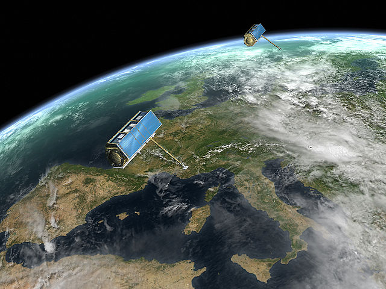
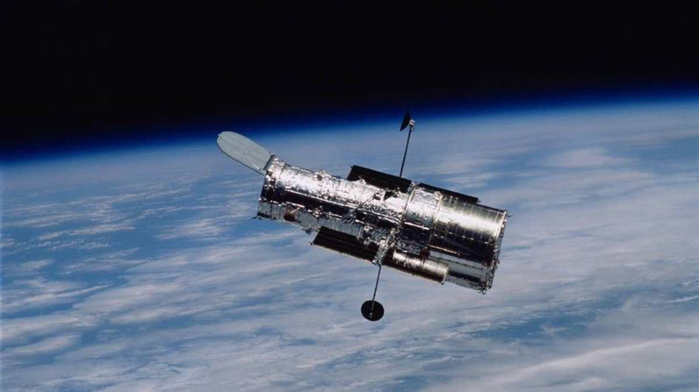

Satelit

Dilansir dari Wikipedia, Satelit buatan manusia pertama adalah Sputnik 1, diluncurkan oleh Soviet pada tanggal 4 Oktober 1957, dan memulai Program Sputnik Rusia, dengan Sergei Korolev sebagai kepala disain dan Kerim Kerimov sebagai asistennya. Peluncuran ini memicu lomba ruang angkasa (space race) antara Soviet dan Amerika.
Sputnik 1 membantu mengidentifikasi kepadatan lapisan atas atmosfer dengan jalan mengukur perubahan orbitnya dan memberikan data dari distribusi signal radio pada lapisan ionosphere. Karena badan satelit ini diisi dengan nitrogen bertekanan tinggi, Sputnik 1 juga memberi kesempatan pertama dalam pendeteksian meteorit, karena hilangnya tekanan dalam disebabkan oleh penetrasi meteroid bisa dilihat melalui data suhu yang dikirimkannya ke bumi.
Sputnik 2 diluncurkan pada tanggal 3 November 1957 dan membawa awak makhluk hidup pertama ke dalam orbit, seekor anjing bernama Laika. Pada bulan Mei, 1946, Project Rand mengeluarkan desain preliminari untuk experimen wahana angkasa untuk mengedari dunia, yang menyatakan bahwa, "sebuah kendaraan satelit yang berisi instrumentasi yang tepat bisa diharapkan menjadi alat ilmu yang canggih untuk abad ke duapuluh". Amerika sudah memikirkan untuk meluncurkan satelit pengorbit sejak 1946 di bawah Kantor Aeronotis angkatan Laut Amerika (Bureau of Aeronautics of the United States Navy). Project RAND milik Angkatan Udara Amerika akhirnya mengeluarkan laporan di atas, tetapi tidak mengutarakan bahwa satelit memiliki potensi sebagai senjata militer; tetapi, mereka menganggapnya sebagai alat ilmu, politik, dan propaganda. Pada tahun 1954, Sekertari Pertahanan Amerika menyatakan, "Saya tidak mengetahui adanya satupun program satelit Amerika."
Pada tanggal 29 Juli 1955, Gedung Putih mencanangkan bahwa Amerika Serikat akan mau meluncurkan satelit pada musim semi 1958. Hal ini kemudian diketahui sebagai Project Vanguard. Pada tanggal 31 July, Soviets mengumumkan bahwa mereka akan meluncurkan satelit pada musim gugur 1957.
Mengikuti tekanan dari American Rocket Society (Masyarakat Roket America), the National Science Foundation (Yayasan Sains national), and the International Geophysical Year, interest angkatan bersenjata meningkat dan pada awal 1955 Angkatan Udara Amerika dan Angkatan Laut mengerjai Project Orbiter, yang menggunakan wahana Jupiter C untuk meluncurkan satelit. Proyek ini berlangsung sukses, dan Explorer 1 menjadi satelit Amerika pertama pada tanggal 31 januari 1958. Pada bulan Juni 1961, tiga setengah tahun setelah meluncurnya Sputnik 1, Angkatan Udara Amerika menggunakan berbagai fasilitas dari Jaringan Mata Angkasa Amerika (the United States Space Surveillance Network) untuk mengkatalogkan sejumlah 115 satelit yang mengorbit bumi.
Satelit Observasi
Satelit pengamat Bumi adalah satelit yang dirancang khusus untuk mengamati Bumi dari orbit, mirip dengan satelit mata-mata tetapi ditujukan untuk penggunaan non-militer seperti pengawasan lingkungan, meteorologi, pembuatan peta, dll. Banyak jenis observasi dapat dibuat dari satelit, termasuk pengintai militer, pemetaan medan, fotografi astronomi, inspeksi internasional, pengamatan awan, dan fotografi Bumi-berguna dalam ilmu bumi. Pengamatan dapat dilakukan dengan berbagai cara, menggunakan sensor yang beroperasi di bagian yang berbeda dari spektrum elektromagnetik. Sensor pertama kali digunakan oleh manusia adalah mata telanjang. Berikutnya datang fotografi dengan kemampuannya untuk merekam dalam jumlah besar bentuk permanen dari informasi rinci. Kemudian disusul pengembangan radar pengintai, intersepsi elektronik, dan pengintaian inframerah.
Observatorium angkasa
Observatorium angkasa adalah segala alat yang berada di luar angkasa yang digunakan untuk mengamati planet, galaksi, dan benda planet lainnya.
Beberapa observatorium telah diluncurkan ke orbit, dan kebanyakan telah memperluas pengetahuan kita tentang kosmos. Pengamatan astronomi dari Bumi dibatasi oleh pemfilteran dan gangguan radiasi elektromagnetik karena atmosfer Bumi. Oleh karena itu mengirim observatorium ke luar angkasa sangat diperlukan. Sebagaimana sebuah teleskop mengorbit Bumi di luar atmosfer dia tidak kena oleh twinkling (distorsi karena turbulensi panas udara) atau polusi cahaya dari sumber cahaya buatan di Bumi. Beberapa teleskop landas bumi (seperti Teleskop Keck I dan II, Very Large Telescope) dapat menghilangkan efek turbulensi atmosfer dengan bantuan optik adaptifnya.
Astronomi berbasis-angkasa bahkan lebih penting untuk menjangkau frekuensi yang berada di luar jendela optik dan jendela radio, kedua rentang panjang gelombang dari spektrum elektromagnetik yang tidak berkurang oleh atmosfer. Contohnya, Pengamatan sinar-X hampir tidak mungkin bila dilakukan dari Bumi, dan telah mencapai tempat yang penting dalam astronomi hanya karena satelit orbit yang dilengkapi dengan teleskop sinar-X seperti Observatorium Chandra.
Satelit Mata Mata

Satelit Pengintai (secara resmi disebut satelit pemantau, Inggris: Reconnaissance satellite) adalah sebuah satelit pemantau Bumi atau satelit komunikasi yang digelar untuk keperluan militer maupun intelejen.
Biasanya merupakan teleskop bintang yang diarahkan ke Bumi dan bukan ke arah bintang. Generasi awal dari satelit ini ialah Corona dan Zenit yang mekanismenya yaitu, mereka mengambil foto dari angkasa, kemudian melontarkan kaleng berisi negatif film ke bumi untuk diambil kemudian.
Satelit Aktif dan Pasif
Satelit pasif merupakan satelit yang mencerminkan radiasi elektromagnetik yang diterimanya tanpa modifikasi atau amplifikasi. Satelit pasif tidak dapat menghasilkan tenaga mereka tetapi hanya mencerminkan kekuatan yang diterimanya.
Satelit aktif adalah satelit yang dapat mengirimkan daya disebut satelit aktif. Mereka dapat memperkuat atau memodifikasi sinyal yang diterima kemudian untuk transmisi.
Miniaturisasi Satelit
Satelit miniatur atau satelit kecil adalah satelit dengan massa dan ukuran rendah, biasanya di bawah 500 kg (£ 1100). Sementara semua satelit tersebut dapat disebut satelit kecil, klasifikasi yang berbeda digunakan untuk mengkategorikan mereka berdasarkan massa.
Salah satu alasan untuk miniaturisasi satelit adalah untuk mengurangi biaya: satelit yang lebih berat membutuhkan roket yang lebih besar dengan daya dorong yang lebih besar yang juga memiliki biaya yang lebih besar. Sebaliknya, satelit yang lebih kecil dan lebih ringan membutuhkan kendaraan peluncuran yang lebih kecil dan lebih murah dan kadang-kadang dapat diluncurkan dalam kelipatan.